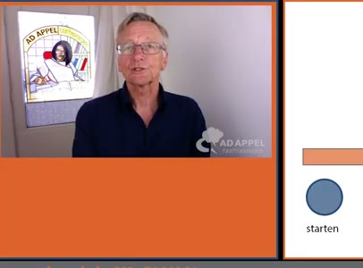
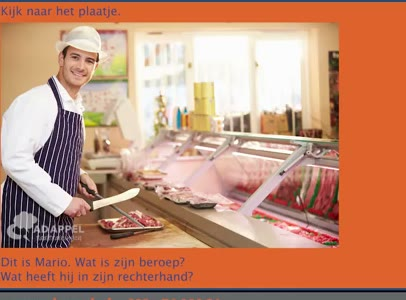
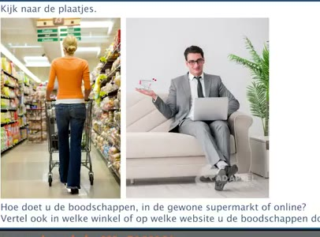
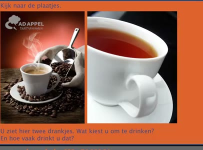
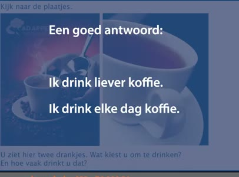
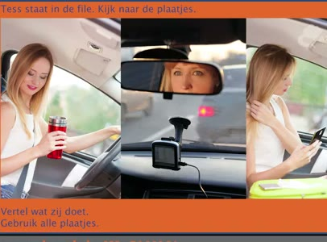

🔊 6 題 🖼️ 6 題 | YouTube ▶
🗣 Ik hou van mooie kleren en ik geef veel geld uit aan kleding. Waar geeft u het meeste geld aan uit?
我喜歡漂亮的衣服，也花很多錢買衣服。 您花最多錢在什麼方面？
Ik geef veel geld uit aan de supermarkt. Ik geef veel geld uit aan eten kopen in de supermarkt. Ik hou van het strand.
我在超市花很多錢。 我在超市買食物花很多錢。 我喜歡海灘。
🗣 Andere mensen houden van bergen of bossen. Weer andere mensen houden van het leven in de grote stad. Wat vindt u het leukst en vertel ook waarom.
其他人喜歡山脈或森林。 還有其他人喜歡在大城市生活。 您覺得什麼最有趣，也請說說為什麼。
Ik vind de grote stad leuk. In de stad zijn bioscopen, musea, veel monumenten. Een grote stad is nooit saai.
我喜歡大城市。在城市裡有電影院、博物館和很多紀念碑。大城市從不無聊。
🗣 In welk land zou u het liefst willen wonen en vertel ook waarom. Ik woon het liefst in Indonesië.
您最想住在哪個國家？也請說明原因。 我最想住在印尼。
Daar is het lekker warm en daar is veel lekker eten. Ik koop weleens tweedehands spullen.
那裡天氣很暖和，那裡有很多好吃的東西。 我偶爾會買二手東西。
🗣 Doe u dat ook weleens? En wat koopt u dan? Ja, ik koop wel eens tweedehands meubels.
您也會偶爾買嗎？您會買什麼？ 是的，我會買二手傢俱。
Ik kook graag.
我喜歡烹飪。
🗣 Ik vind het leuk om speciale gerechten te maken. Kookt u ook graag? En wat maakt u dan voor eten? Ik kook ook graag. Ik maak dan spaghetti.
我喜歡做特殊料理。您也喜歡做菜嗎？您會做什麼菜？ 我也喜歡做菜。我會做義大利麵。
Ik ga elke ochtend vijf kilometer rennen.
我每天早上跑五公里。
🗣 Thomas is verkoper. Wat verkoopt hij? Werkt hij in een grote stad of in een klein dorpje? Wat denkt u? Hij verkoopt kleding.
托馬斯是銷售員。他賣什麼？他是在大城市工作還是在小鄉村？您覺得呢？ 他賣衣服。
Ik denk dat hij in een grote stad werkt.
我覺得他是在大城市工作。

🗣 Wat vindt u van mensen die elke dag sporten? En doet u zelf ook aan sport? Ja, ik sport ook graag. Ik zwem drie keer per week.
您怎麼看待每天運動的人？您自己也運動嗎？ 是的，我也喜歡運動。我一週游泳三次。
Kijk naar het plaatje.
請看圖片。

🗣 Dit is Mario. Wat is zijn beroep? Wat heeft hij in zijn rechterhand? Hij is slager en hij heeft een mes in zijn hand.
這是馬里奧。他的職業是什麼？他右手拿著什麼？ 他是屠夫，右手拿著一把刀。
Kijk naar het plaatje.
請看圖片。

🗣 Kijk naar de plaatjes. Hoe doet u de boodschappen? In de gewone supermarkt of online? Vertel ook in welke winkel of op welke website u de boodschappen doet. Ik doe de boodschappen online.
請看圖片。 您怎麼買菜？是在普通超市還是網路上？也請說明您在哪家店或哪個網站買菜。 我網路買菜。
Ik doe de boodschappen bij Albert Heijn.
我在 Albert Heijn 超市買菜。

🗣 Kijk naar de plaatjes.
請看圖片。
Ik drink liever koffie. Ik drink elke dag koffie.
我比較喜歡喝咖啡。我每天喝咖啡。

🗣 Adriaan is politieagent. Kijk naar de plaatjes. Vertel wat hij moet doen. Gebruik alle plaatjes. Hij controleert de snelheid van auto's. Hij geeft een boete.
阿德里安是警察。請看圖片。 請說明他要做什麼。請用所有圖片說明。 他在檢查車輛速限。他發出罰單。
Hij werkt op kantoor.
他在辦公室工作。

🗣 Tess staat in de file. Kijk naar de plaatjes. Vertel wat zij doet. Gebruik alle plaatjes. Zij drinkt thee. Zij kijkt in de spiegel.
特斯塞擠在車陣中。請看圖片。 請說明她在做什麼。請用所有圖片說明。 她喝茶。她照鏡子。
Zij kijkt op haar telefoon. Zijkijktophaartelefoon
她看手機。